Sử dụng AI tạo sinh để hỗ trợ sáng tạo nội dung
Ứng dụng Midjourney / DALL-E and các mô hình sinh văn bản để xây dựng ấn phẩm truyền thông khoa học trực quan.
I. Lựa chọn dự án
1. Chủ đề:
Thiết kế Infographic về “Vòng đời của Bướm Chúa” (Monarch Butterfly Lifecycle).
2. Lý do lựa chọn:
- •Tính hấp dẫn trực quan: Vòng đời của Bướm Chúa có 4 giai đoạn rõ ràng (Trứng, Sâu bướm, Nhộng, Bướm trưởng thành) với màu sắc và hình thái rất đặc trưng, dễ dàng tạo ra một sản phẩm đẹp mắt.
- •Dễ tìm hình ảnh/tư liệu: Vì dữ liệu về loài bướm rất phong phú, giúp các công cụ AI tạo hình ảnh hoạt động hiệu quả và chính xác hơn.
- •Nhiều ý tưởng tích hợp: Bên cạnh vòng đời, có thể tích hợp thêm các thông tin phụ liên quan như: Sơ đồ di cư, sự phụ thuộc vào cây Bông sữa (Milkweed), hoặc sự phân biệt giới tính,…
3. Ý tưởng chi tiết cho Infographic:
- •Bố cục: Dạng dọc (4:3 hoặc 16:9 dọc), chia làm 4 phần chính tương ứng 4 giai đoạn, xếp chồng hoặc đi theo mũi tên vòng tròn.
- •Nội dung chính:
- •Tiêu đề chính: "VÒNG ĐỜI CỦA BƯỚM CHÚA".
- •Giai đoạn 1 (Trứng): Ảnh cận cảnh trứng trên lá bông sữa.
- •Giai đoạn 2 (Sâu bướm): Ảnh sâu bướm đang ăn lá.
- •Giai đoạn 3 (Nhộng/Kén): Ảnh kén bướm.
- •Giai đoạn 4 (Bướm trưởng thành): Ảnh bướm Monarch xòe cánh.
Với mỗi giai đoạn, chèn thêm văn bản mô tả tóm tắt về sự thay đổi hình thái, sinh lý của bướm trong giai đoạn đó.
- •Hình ảnh và Đồ họa: Ảnh chụp macro siêu thực (generated by AI), kết hợp các vector icon sạch sẽ cho dữ liệu (arrows, data points).
- •Màu sắc: Tông màu chủ đạo là Cam và Xanh lá.
II. Lựa chọn công cụ
1. Công cụ AI tạo văn bản: Google Gemini (để lập dàn ý, viết nội dung chi tiết và tinh chỉnh prompt).
2. Công cụ AI tạo hình ảnh: DALL-E 3 (Công cụ AI tạo hình ảnh miễn phí, chuyên tạo ảnh macro siêu thực).
3. Công cụ AI hỗ trợ thiết kế: Canva AI (với các tính năng AI như Magic Media, Background Remover để ghép và chỉnh sửa assets).
III. Quá trình thực hiện sáng tạo nội dung
- •Bước 1: Lên kế hoạch, nội dung và chiến lược Prompt (Google Gemini)
- •Prompt 1 (Lập dàn ý): Hãy lập một dàn ý chi tiết cho một infographic dạng dọc về vòng đời hoàn chỉnh của bướm Chúa. Chia nội dung thành 4 phần tương ứng với 4 giai đoạn: Trứng, Sâu bướm, Nhộng, Bướm trưởng thành. Cung cấp các thông tin chính cho từng giai đoạn bằng tiếng Việt và gợi ý các yếu tố hình ảnh minh họa cho mỗi phần. Bên cạnh thông tin chính về từng giai đoạn, tích hợp thêm các thông tin phụ liên quan như: Sơ đồ di cư, sự phụ thuộc vào cây Bông sữa (Milkweed), hoặc sự phân biệt giới tính, …
- •Kết quả 1: Google Gemini cung cấp dàn ý chi tiết 4 giai đoạn bằng Tiếng Việt.
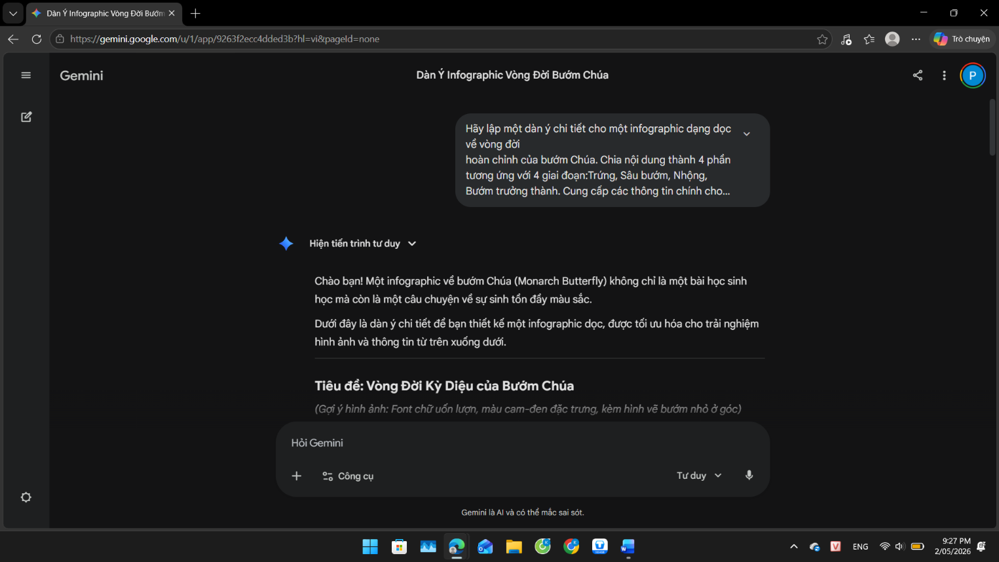
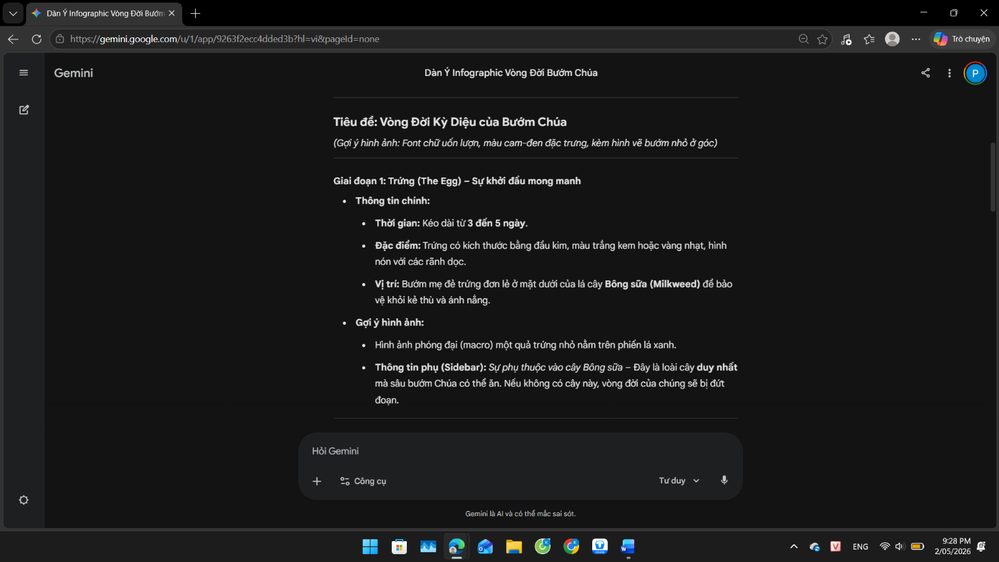
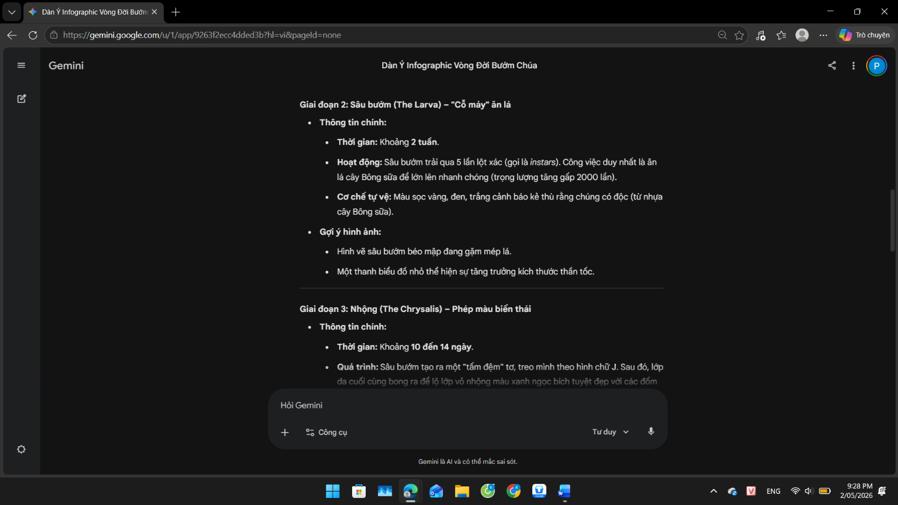
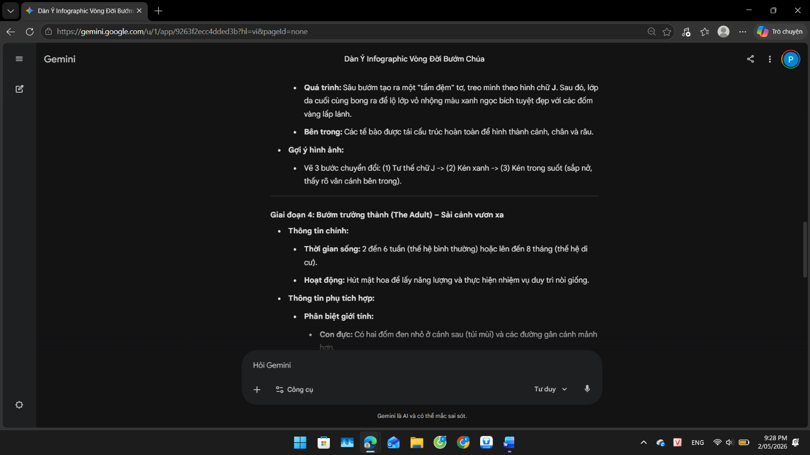
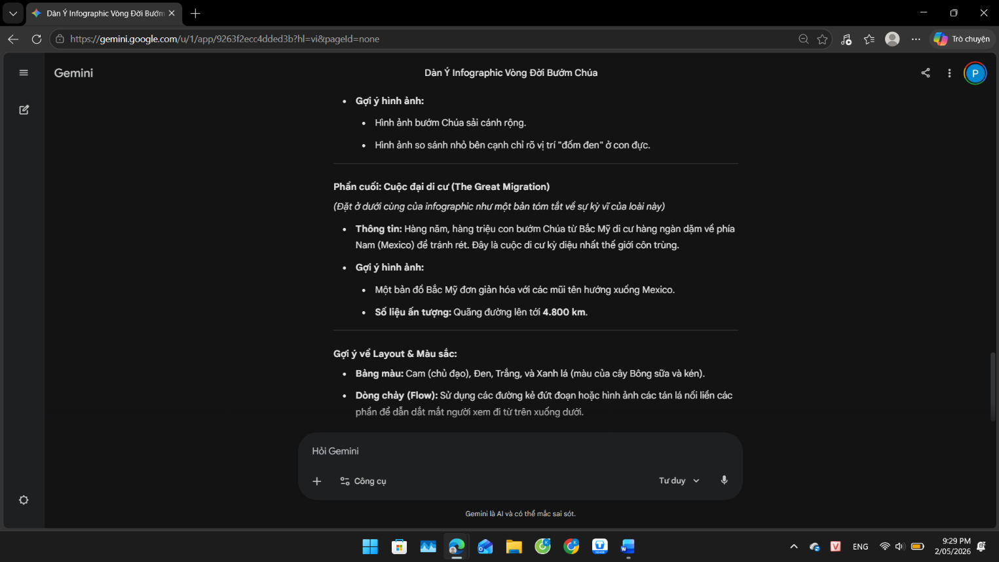
- •Prompt 2 (Tạo prompt cho DALL-E 3): Dựa trên dàn ý trên, hãy tạo các câu lệnh (prompt) tạo hình ảnh nâng cao cho DALL-E 3 để tạo ra các tài nguyên ảnh siêu thực, độ phân giải cao cho từng phần trong 4 giai đoạn. Sử dụng ngôn ngữ mô tả chuyên sâu về nhiếp ảnh macro (chụp cận cảnh), ánh sáng và kết cấu bề mặt. Chỉ định tỷ lệ khung hình là 4:3.
- •Kết quả 2: Google Gemini đưa ra 4 prompt tiếng Anh chuyên sâu cho DALL-E 3.
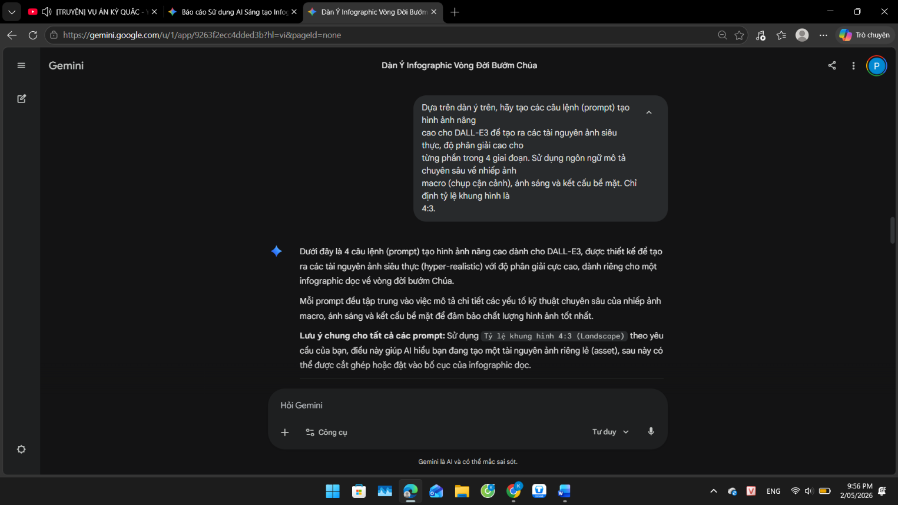
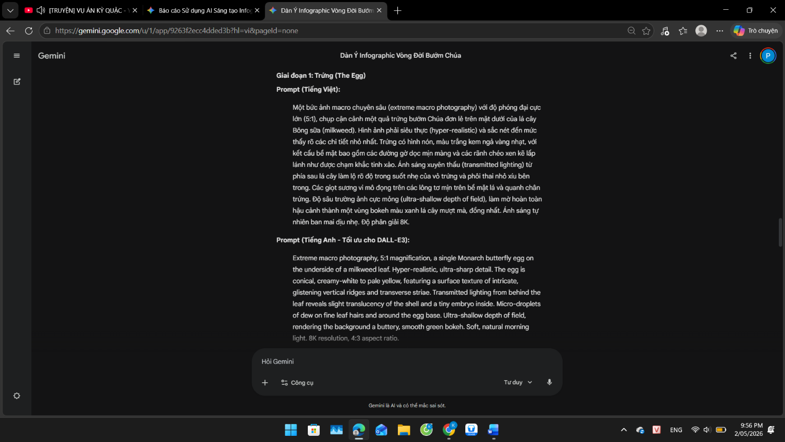
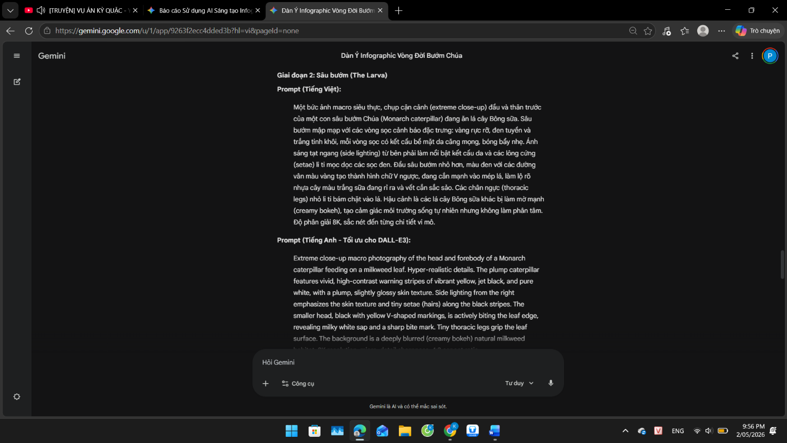
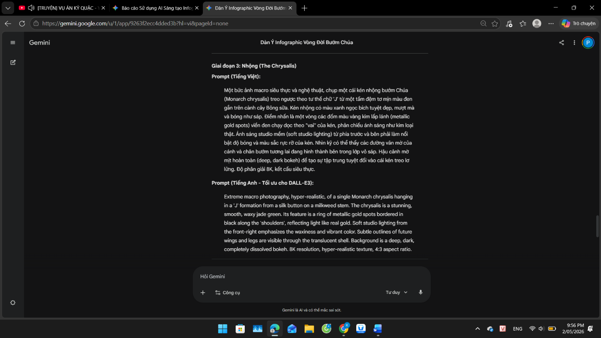
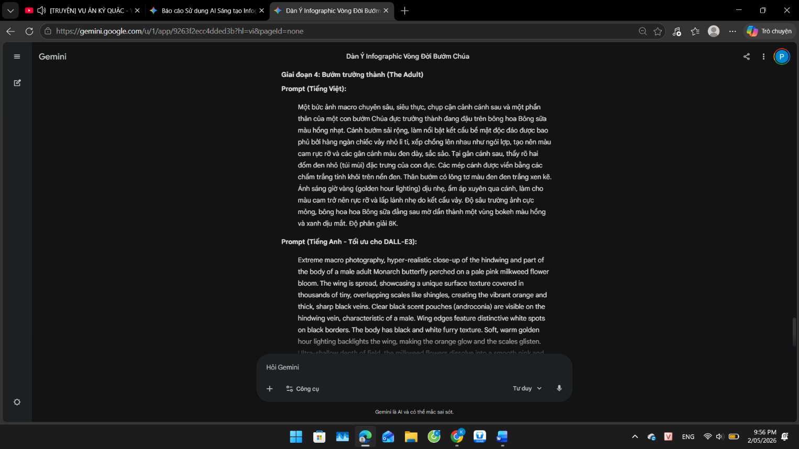
- •Bước 2: Tạo hình ảnh (DALL-E 3)
Sử dụng DALL-E 3 với các prompt từ Google Gemini đã được tôi tinh chỉnh lại. Kết quả cho ra các hình ảnh về Vòng đời của bướm Chúa.
- •Giai đoạn 1: Trứng
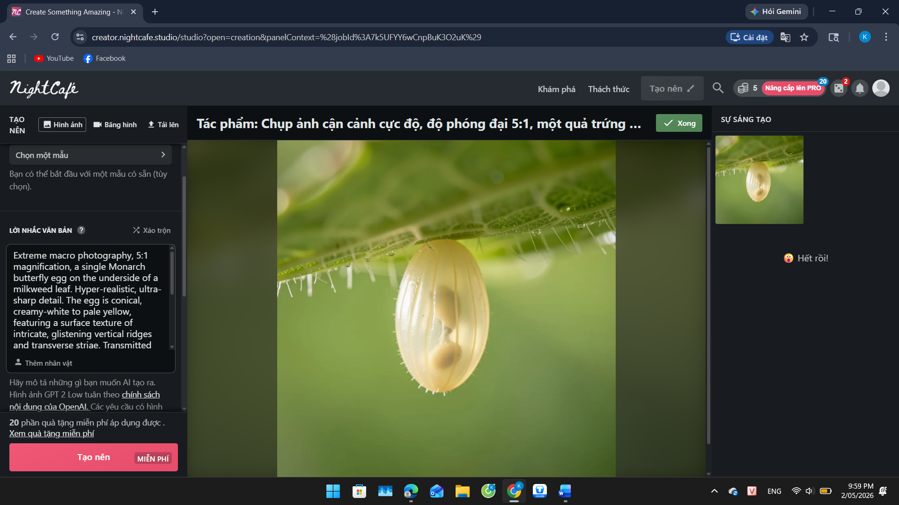
- •Giai đoạn 2: Sâu bướm
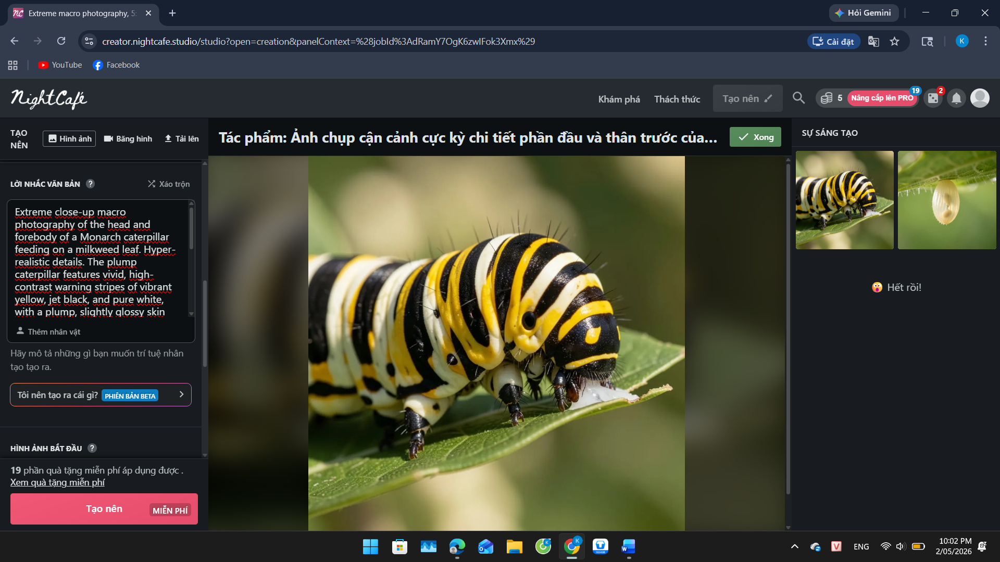
- •Giai đoạn 3: Kén
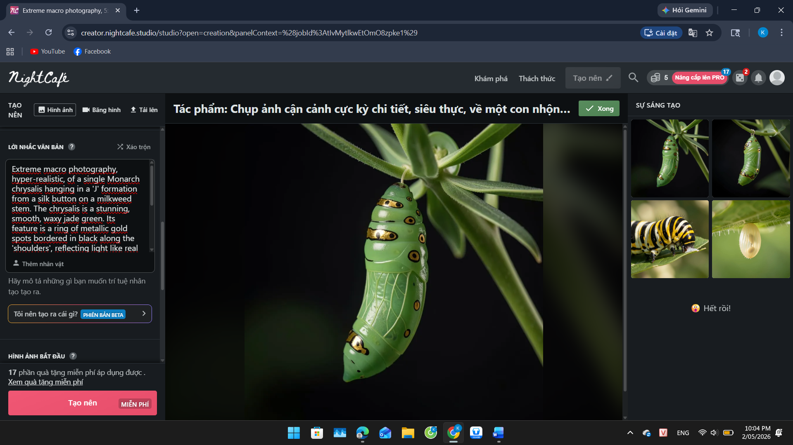
- •Giai đoạn 4: Bướm trưởng thành
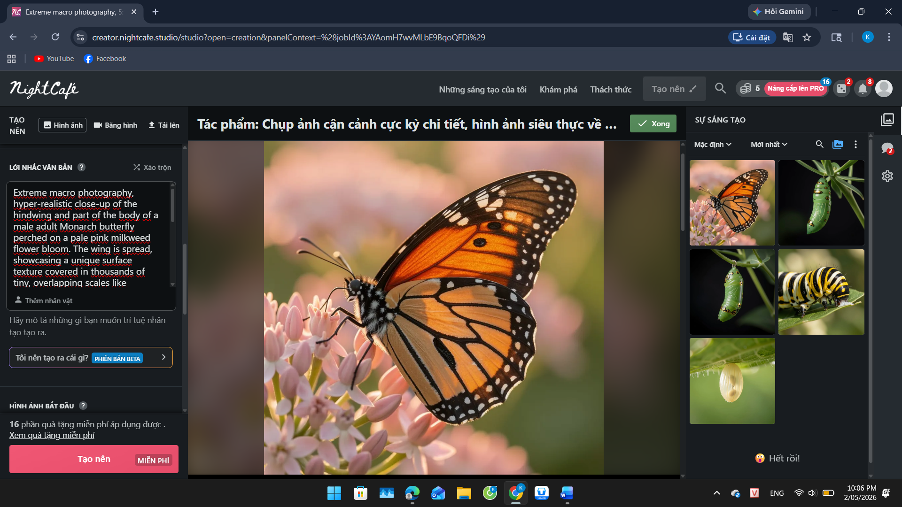
- • Bước 3: Thiết kế Infographic (Canva)
- •Đưa ảnh từ DALL-E 3 vào Canva.
- •Sử dụng Canva AI để thiết kế Infographic, giúp bố cục trông hiện đại và chuyên nghiệp hơn.
- •Tự tay thiết kế các đường dẫn mũi tên, chọn font chữ và phối màu cam - xanh đặc trưng.
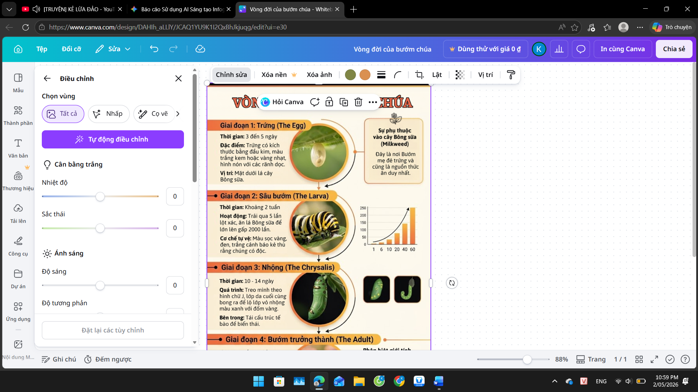
IV. So sánh các công cụ AI
| Tiêu chí | Google Gemini | DALL-E 3 | Canva AI |
|---|---|---|---|
| Vai trò chính | Lập dàn ý, tra cứu kiến thức sinh học và tối ưu hóa prompt. | Tạo ra các bức ảnh macro siêu thực về vòng đời bướm. | Tách nền, hiệu chỉnh bố cục và tạo các biểu tượng bổ trợ. |
| Độ chính xác nội dung | Rất cao. Có khả năng truy cập dữ liệu thực tế để đảm bảo kiến thức sinh học đúng. | Khá. Hiểu tốt các mô tả phức tạp nhưng đôi khi sai chi tiết nhỏ (số lượng chân). | Trung bình. Các hình ảnh tạo ra từ Magic Media thường mang tính minh họa chung chung. |
| Khả năng tương tác | Giao tiếp tự nhiên, hỗ trợ đa ngôn ngữ và hiểu ngữ cảnh tốt. | Hiểu ngôn ngữ tự nhiên tốt nhất trong các dòng AI tạo ảnh hiện nay. | Giao diện kéo thả trực quan, tích hợp ngay trong không gian thiết kế. |
| Hạn chế lớn nhất | Không trực tiếp tạo ra file thiết kế đồ họa hay ảnh chất lượng cao. | Khó duy trì tính nhất quán của nhân vật/chủ thể qua nhiều lần tạo khác nhau. | Chất lượng hình ảnh sau khi dùng chức năng tách nền khá mờ. |
V. Hoàn thiện dự án
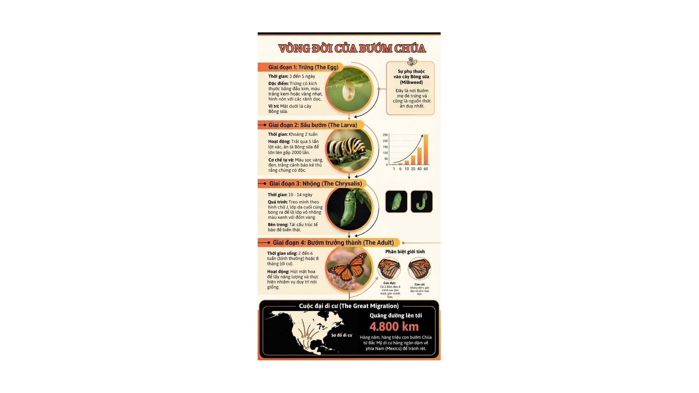
Dự án đạt được sự hài hòa giữa sản phẩm AI và đóng góp cá nhân:
- •AI (dưới 50%): Cung cấp ý tưởng văn bản và tạo hình ảnh.
- •Cá nhân (trên 50%): Kiểm chứng kiến thức sinh học, chọn lọc thông tin phù hợp, thiết kế bố cục infographic.
VI. Phân tích về vai trò của AI trong quá trình sáng tạo
1. Ưu điểm và hạn chế
a. Ưu điểm
- •Tối ưu hóa hiệu suất và thời gian: AI giúp rút ngắn giai đoạn lên ý tưởng. Thay vì mất nhiều giờ tra cứu tài liệu và tìm kiếm hình ảnh không dính bản quyền, Google Gemini và DALL-E 3 cho phép hoàn thiện dàn ý nội dung và tư liệu hình ảnh chỉ trong vài phút.
- •AI xóa bỏ rào cản về kỹ thuật đồ họa chuyên sâu. Một sinh viên ngành Sinh học không cần thành thạo các phần mềm phức tạp như Adobe Illustrator vẫn có thể tạo ra các sản phẩm đạt tiêu chuẩn nhờ sự hỗ trợ của Canva AI và DALL-E 3.
- •AI đóng vai trò là người đồng hành "brainstorming". Các gợi ý từ Google Gemini có thể mở ra những góc nhìn mới mà con người bỏ sót, giúp mở rộng giới hạn sáng tạo của cá nhân.
b. Hạn chế
- •Vấn đề "Ảo giác" (AI Hallucination): Đây là hạn chế lớn nhất đối với các dự án khoa học. AI có thể tạo ra hình ảnh sâu bướm Monarch trông rất đẹp nhưng lại sai lệch về số lượng đốt thân hoặc đặc điểm giải phẫu học. Điều này đòi hỏi người dùng phải có kiến thức chuyên môn để kiểm chứng.
- •Thiếu hụt cảm xúc và bản sắc riêng: Các sản phẩm thuần AI thường có xu hướng "hoàn hảo một cách công nghiệp", thiếu đi những nét riêng mang tính cảm xúc và trải nghiệm cá nhân vốn là linh hồn của các tác phẩm nghệ thuật truyền thống.
- •Sự phụ thuộc vào chất lượng Prompt: Hiệu quả của AI tỷ lệ thuận với khả năng diễn đạt của con người. Nếu người dùng không có tư duy logic và vốn từ vựng tốt để viết prompt, kết quả nhận được sẽ rất chung chung và kém hiệu quả.
2. Cách AI thay đổi quy trình sáng tạo
AI đã làm thay đổi hoàn toàn cấu trúc của dòng công việc (workflow), chuyển dịch từ mô hình Thực thi (Execution-heavy) sang mô hình Điều phối (Curation-heavy):
- •Trước đây, người sáng tạo dành 80% thời gian cho việc thực hiện các thao tác kỹ thuật (vẽ, cắt ảnh, chỉnh màu). Hiện nay, 80% thời gian đó được dành cho việc ra quyết định: lựa chọn ý tưởng từ Gemini, chọn lọc ảnh từ DALL-E 3 và điều phối bố cục trên Canva.
- •Vòng lặp thử nghiệm: AI cho phép chúng ta thử nghiệm và sai (Trial and Error) với chi phí gần như bằng không. Ta có thể yêu cầu AI tạo ra 10 phương án bố cục khác nhau trong 1 phút để chọn ra phương án tối ưu nhất.
- •Sáng tạo dựa trên sự cộng tác (Collaborative Creativity): AI cung cấp các nguyên liệu thô, và con người đóng vai trò kiểm định thông tin, sàng lọc văn hóa, thẩm mỹ và đạo đức để tạo ra thành phẩm cuối cùng.
3. Các vấn đề đạo đức cần cân nhắc
Khi tích hợp AI vào quy trình sáng tạo chuyên nghiệp, chúng ta buộc phải đối mặt với các vấn đề đạo đức:
- •Quyền sở hữu trí tuệ và bản quyền: Các mô hình AI như DALL-E 3 được huấn luyện trên hàng tỷ tác phẩm có sẵn. Việc sử dụng sản phẩm từ AI đặt ra câu hỏi: Liệu chúng ta có đang vô tình "mượn" phong cách của các nghệ sĩ khác mà không có sự cho phép? Hiện nay, khung pháp lý về bản quyền cho tác phẩm do AI tạo ra vẫn đang trong quá trình xây dựng.
- •Tính trung thực và minh bạch: Trong môi trường học thuật, việc sử dụng AI cần được công khai minh bạch. Việc trình bày một sản phẩm 100% do AI tạo ra và coi đó là nỗ lực cá nhân là vi phạm đạo đức liêm chính học thuật.
- •Tác động đến thị trường lao động: Sự trỗi dậy của AI gây áp lực lên các ngành nghề sáng tạo truyền thống như thiết kế đồ họa, nhiếp ảnh. Điều này đòi hỏi thế hệ sinh viên hiện đại không chỉ học kỹ năng chuyên môn mà còn phải học cách làm chủ AI để không bị tụt hậu.
- •Định kiến và sai lệch: AI có thể phản ánh những định kiến có sẵn trong dữ liệu đào tạo. Người sáng tạo cần tỉnh táo để nhận diện và loại bỏ các yếu tố sai lệch về văn hóa trong các sản phẩm do AI gợi ý.
Mục lục bài tập
Mục tiêu chính
Ứng dụng các công cụ AI tạo sinh hình ảnh và văn bản để thiết kế ấn phẩm truyền thông khoa học trực quan về chủ đề Sinh học.